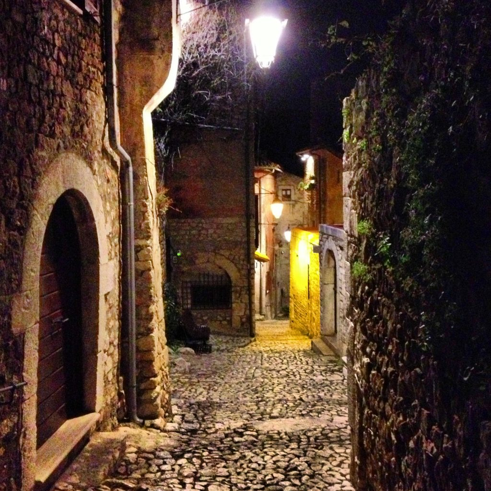

The Medieval village of Sermoneta, near Rome
DID YOU KNOW? Street number schemes in Rome, Florence and Venice are a little bit odd. Here’s how they work:- Rome (Roma): street numbers proceed down on one side of the street and back up on the other side. This for the entire length of the street regardless of how many blocks.
- Florence (Firenze): street numbers for commercial addresses are red, for residential addresses are blue or black.
- Venice (Venezia): addresses are a combination of the name of one of the six Venetian neighborhoods plus a number with no sequential order.